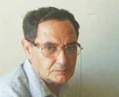

ГЛАВНОЕ, НЕ ПОТЕРЯТЬ ЧЕЛОВЕЧЕСКИЙ ОБЛИК
28 июня 2007 года представители интеллигенции Азербайджана и Армении побывали в Ханкенди и Шуше, затем отправились в Армению, где была организована встреча с президентом Робертом Кочаряном. Мероприятие прошло по инициативе послов Азербайджана и Армении в Российской Федерации.
Визит представителей азербайджанской интеллигенции взбудоражил наше общество. Это нормально. «Карабах» - самая больная наша тема, в ней наша боль, наше отчаяние, наша вера и безверие, наши надежды и наши иллюзии. Линии разлома проходят не только между теми, кто настроен воинственно и кто настроен миролюбиво, по существу разломы проходят внутри каждого из нас, проявляясь по-разному в различных ситуациях. Вот почему так опасно молчание, когда общество делает вид, что ничего не произошло и ничего не происходит. Вот почему, так необходимы самые острые дискуссии по карабахской проблеме. Только плодотворность таких дискуссий возможна только, когда мы научимся не называть предателем каждого человека, кто осмеливается пойти против распространенного общественного мнения.
Итак, первый вывод, который я хотел бы сделать в связи с «визитом» - необходима широкая дискуссия. Если дискуссия заглохнет, так и не начавшись апатия и равнодушие нашего общества еще более углубятся. Именно по этой причине, мне кажется правильным, что газета «Зеркало» напечатала статью Ровшана Новрузоглу «С кем дружим, господа?!». («Зеркало», 10 июля, 2007 года).
Выскажу свое мнение к визиту представителей азербайджанской интеллигенции, с большинством которых лично знаком и отношусь с большим уважением. Всегда был и остаюсь приверженцем контактов с представителями армянского общества на всех его уровнях, и не раз участвовал в подобных встречах. Сегодня вспоминаю одну из первых таких встреч, на который присутствовал выдающийся армянский писатель, ныне покойный Грант Матевосян. Можно по-разному относиться к тому, что говорил на этой встрече (а Грант Матевосян, почти все время беседовал не с представителями нашей делегации, а с азербайджанскими и армянскими водителями), что писал после этой встречи, но, на мой взгляд, это был искренний и открытый человек, у которого, естественно, были свои разломы. Убежден, что с людьми класса Гранта Матевосяна (а такие в Армении, несомненно, есть) следует обязательно дискутировать, причем не только доказывая собственную позицию, но и внимательно выслушивая мнения оппонентов.
Итак я за «визит», хотя не склонен видеть в нем особую «плодотворность» в деле немедленных подвижек в Карабахской проблеме, и разумеется, принципиально не приемлю обвинения в «предательстве национальных интересов». Вместе с тем, откровенно признаюсь, что меня смущает в визите представителей азербайджанской интеллигенции.
Ничего предосудительного не вижу в том, что визит состоялся по согласованию с Президентом страны, хотя и не считаю, что подобные визиты, необходимо, обязательно согласовывать с властью. Но если согласование произошло, то общество должно знать, что стоит за этим визитом, что последуют другие встречи, что власть отныне не будем препятствовать подобным встречам, не будет создавать вокруг них атмосферу враждебности и предательства.
С полным пониманием отношусь к мнению Полада Бюль-бюль оглы, признавшего, что раньше и он препятствовал подобным встречам, а сейчас изменил свое к ним отношение. Но почему произошел такой поворот, с чем это связано, в какой степени сказалось пребывание Полада Бюль-бюль оглы в качестве посла? (Если подобные вопросы были озвучены на пресс-конференции, на которой я не присутствовал, то приношу свои извинения уважаемому послу).
В защиту визита высказался и Аллахшукюр Паша-заде, но его аргументация оказалась обескураживающей. Шейх заявил буквально следующее: «Не стоит удивляться, что представители нашей интеллигенции поехали на нашу территорию. В этом нет ничего необычного, точно также как если бы они поехали в Шемаху». На мой взгляд, большей дискредитации визита трудно было ожидать даже от самых радикальных «защитников» Карабаха. Если это не гражданский поступок, если это не гражданская акция, то зачем надо было обосновывать собственные позиции, созывать пресс-конференции и т.п. Со своей стороны, склонен считать, что уважаемая группа нашей интеллигенции совершила гражданский поступок, который придется в будущем публично - подчеркиваю публично – защищать. И не только от наскоков одной пресловутой Организации.
Будущее покажет, осознает ли уважаемая группа нашей интеллигенции какую ответственность они взвалили на свои плечи, поскольку сама встреча осмыслена в обществе как некая веха, как некий рубеж, или... Или позволит себе быть разменной монетой в сложных закулисных манёврах сторон, ведущих «переговоры».
Теперь о позиции, г-на Ровшана Новрузоглу. Окончательный вывод, который можно сделать из статьи, что исторические события как столетней давности, так и недавней нашей истории свидетельствуют о том, что «армянам» нельзя доверять.
Сразу скажу, что считаю позицию г-на Новрузоглу, крайне опасной.
Почему?
Не только потому, что «армяне», которые все одинаковы, слишком грубое обобщение, и хотя бы в тысячный раз приходится повторять, что мы не ведем этническую войну с «армянами».
Не только потому, что действительно «история должна учить», что существует в мире Германия, на территории которой был осуществлен холокост, идейно подготовленный и технологически осуществленный геноцид еврейского народа, но эта страна считает своим долгом вернуть еврейское население в свою страну. Можно привести множество других примеров, чтобы не считать, что наша «история» делает невозможным какие-либо контакты с армянами.
Не только потому, что при таком отношении ко всем «армянам» непонятно, как мы можем предоставлять «своим армянам» «высокую степень автономии в границах Азербайджанской государственности» и как можем считать своими гражданами тех армян, которые продолжают жить, например, в Баку, и на которых мы при случае, указываем как на пример нашей национальной толерантности.
Не только потому, что в современном глобальном мире невозможно отслеживать и приглашать на гастроли только те коллективы, в которых не работают армяне, или показывать только те фильмы, в титрах которых нет армянские фамилии, и т.п. Кроме всего прочего, придется тогда договориться, считаем ли мы «армянином» того, у которого оба родителя «армяне», а если во втором поколении, а если в третьем, а если тетя или двоюродная сестра…
Не только потому что, если мы на официальном уровне озвучим эту нашу «антиармянскую позицию», нам грозит изоляция от цивилизованного сообщества, а сидеть на двух стульях, жить по одним правилам дома, а по другим в мире, долго невозможно, не только потому, что обман рано или поздно обнаружится, но и потому что в таком случае «домашние правила» жизни рано или поздно терпят крах.
Более опасным и более разрушительным, на мой взгляд, является другое. Если победит у нас мнение, что следует в любом армянине видеть потенциального врага, то это с неизбежностью заставит так же относится к самим себе. Обобщенному «они» придется противопоставить такое же обобщенное, монолитное, неделимое «мы». Это не просто иллюзия, это опасная мечта радикалов всех мастей, которых действительно история ничему не учит, хотя подобные расистские (назовем их своим именем) идеи, рано или поздно приводят к краху внутри «своих». Если чуть-чуть задуматься над тем, как возможно это единство среди «своих», то сразу обнаружим, что оно возможно только за счет искоренения «внутренних врагов», мешающих этому единству. Сначала это будут русскоязычные, потом те, кто не «турки», потом те, кто интеллигенты, потом те, у кого много денег, потом те, у кого не такой цвет глаз, потом, потом... если дать волю воображению, можно без конца придумывать подобных «врагов».
Может показаться, что оспаривая идею «любой армянин – потенциальный враг» механически становлюсь на позиции миротворца. Это совершенно не так, поскольку я считаю, что противопоставление «мир или война» еще одна пропагандистская «утка», которая регулярно кем-то (не знаю в каких целях, хорошо бы если просто от глупости) вбрасывается в наше общественное сознание. Какой нормальный человек может сказать, чтобы не произошло, как бы не складывались обстоятельства жизни, я буду защищать свой дом и свою семью только мирными средствами. Какой нормальный азербайджанец не понимает, что если мы находимся в состоянии «не мира, не войны», значит нужна сильная армия, значит мы должны быть готовыми при необходимости мобилизовать свои ресурсы, совершенствовать свои политические институты и пр., пр. Но опять-таки какой здравомыслящий азербайджанец сегодня не отдает себе отчет, что цифры военного бюджета сами по себе ничего не означают, что главное насколько общество готово взять на себя ответственность за эти цифры, насколько оно способно превратить их в реальную силу. Но все это другая тема, которой не буду здесь касаться.
Я говорю о другом. Не знаю насколько визит нашей интеллигенции будет способствовать «прорыву» (рассчитывать на «прорыв» было бы наивно) в решении карабахского конфликта. Но я уверен, лжепатриотическая риторика, иллюзорная идея объявить всех армян вечными врагами и самим стать единой, монолитной силой, отодвигает решение карабахской проблемы.
Пора бы это понять.
Рахман Бадалов
02-08-07
Итак, первый вывод, который я хотел бы сделать в связи с «визитом» - необходима широкая дискуссия. Если дискуссия заглохнет, так и не начавшись апатия и равнодушие нашего общества еще более углубятся. Именно по этой причине, мне кажется правильным, что газета «Зеркало» напечатала статью Ровшана Новрузоглу «С кем дружим, господа?!». («Зеркало», 10 июля, 2007 года).
Выскажу свое мнение к визиту представителей азербайджанской интеллигенции, с большинством которых лично знаком и отношусь с большим уважением. Всегда был и остаюсь приверженцем контактов с представителями армянского общества на всех его уровнях, и не раз участвовал в подобных встречах. Сегодня вспоминаю одну из первых таких встреч, на который присутствовал выдающийся армянский писатель, ныне покойный Грант Матевосян. Можно по-разному относиться к тому, что говорил на этой встрече (а Грант Матевосян, почти все время беседовал не с представителями нашей делегации, а с азербайджанскими и армянскими водителями), что писал после этой встречи, но, на мой взгляд, это был искренний и открытый человек, у которого, естественно, были свои разломы. Убежден, что с людьми класса Гранта Матевосяна (а такие в Армении, несомненно, есть) следует обязательно дискутировать, причем не только доказывая собственную позицию, но и внимательно выслушивая мнения оппонентов.
Итак я за «визит», хотя не склонен видеть в нем особую «плодотворность» в деле немедленных подвижек в Карабахской проблеме, и разумеется, принципиально не приемлю обвинения в «предательстве национальных интересов». Вместе с тем, откровенно признаюсь, что меня смущает в визите представителей азербайджанской интеллигенции.
Ничего предосудительного не вижу в том, что визит состоялся по согласованию с Президентом страны, хотя и не считаю, что подобные визиты, необходимо, обязательно согласовывать с властью. Но если согласование произошло, то общество должно знать, что стоит за этим визитом, что последуют другие встречи, что власть отныне не будем препятствовать подобным встречам, не будет создавать вокруг них атмосферу враждебности и предательства.
С полным пониманием отношусь к мнению Полада Бюль-бюль оглы, признавшего, что раньше и он препятствовал подобным встречам, а сейчас изменил свое к ним отношение. Но почему произошел такой поворот, с чем это связано, в какой степени сказалось пребывание Полада Бюль-бюль оглы в качестве посла? (Если подобные вопросы были озвучены на пресс-конференции, на которой я не присутствовал, то приношу свои извинения уважаемому послу).
В защиту визита высказался и Аллахшукюр Паша-заде, но его аргументация оказалась обескураживающей. Шейх заявил буквально следующее: «Не стоит удивляться, что представители нашей интеллигенции поехали на нашу территорию. В этом нет ничего необычного, точно также как если бы они поехали в Шемаху». На мой взгляд, большей дискредитации визита трудно было ожидать даже от самых радикальных «защитников» Карабаха. Если это не гражданский поступок, если это не гражданская акция, то зачем надо было обосновывать собственные позиции, созывать пресс-конференции и т.п. Со своей стороны, склонен считать, что уважаемая группа нашей интеллигенции совершила гражданский поступок, который придется в будущем публично - подчеркиваю публично – защищать. И не только от наскоков одной пресловутой Организации.
Будущее покажет, осознает ли уважаемая группа нашей интеллигенции какую ответственность они взвалили на свои плечи, поскольку сама встреча осмыслена в обществе как некая веха, как некий рубеж, или... Или позволит себе быть разменной монетой в сложных закулисных манёврах сторон, ведущих «переговоры».
Теперь о позиции, г-на Ровшана Новрузоглу. Окончательный вывод, который можно сделать из статьи, что исторические события как столетней давности, так и недавней нашей истории свидетельствуют о том, что «армянам» нельзя доверять.
Сразу скажу, что считаю позицию г-на Новрузоглу, крайне опасной.
Почему?
Не только потому, что «армяне», которые все одинаковы, слишком грубое обобщение, и хотя бы в тысячный раз приходится повторять, что мы не ведем этническую войну с «армянами».
Не только потому, что действительно «история должна учить», что существует в мире Германия, на территории которой был осуществлен холокост, идейно подготовленный и технологически осуществленный геноцид еврейского народа, но эта страна считает своим долгом вернуть еврейское население в свою страну. Можно привести множество других примеров, чтобы не считать, что наша «история» делает невозможным какие-либо контакты с армянами.
Не только потому, что при таком отношении ко всем «армянам» непонятно, как мы можем предоставлять «своим армянам» «высокую степень автономии в границах Азербайджанской государственности» и как можем считать своими гражданами тех армян, которые продолжают жить, например, в Баку, и на которых мы при случае, указываем как на пример нашей национальной толерантности.
Не только потому, что в современном глобальном мире невозможно отслеживать и приглашать на гастроли только те коллективы, в которых не работают армяне, или показывать только те фильмы, в титрах которых нет армянские фамилии, и т.п. Кроме всего прочего, придется тогда договориться, считаем ли мы «армянином» того, у которого оба родителя «армяне», а если во втором поколении, а если в третьем, а если тетя или двоюродная сестра…
Не только потому что, если мы на официальном уровне озвучим эту нашу «антиармянскую позицию», нам грозит изоляция от цивилизованного сообщества, а сидеть на двух стульях, жить по одним правилам дома, а по другим в мире, долго невозможно, не только потому, что обман рано или поздно обнаружится, но и потому что в таком случае «домашние правила» жизни рано или поздно терпят крах.
Более опасным и более разрушительным, на мой взгляд, является другое. Если победит у нас мнение, что следует в любом армянине видеть потенциального врага, то это с неизбежностью заставит так же относится к самим себе. Обобщенному «они» придется противопоставить такое же обобщенное, монолитное, неделимое «мы». Это не просто иллюзия, это опасная мечта радикалов всех мастей, которых действительно история ничему не учит, хотя подобные расистские (назовем их своим именем) идеи, рано или поздно приводят к краху внутри «своих». Если чуть-чуть задуматься над тем, как возможно это единство среди «своих», то сразу обнаружим, что оно возможно только за счет искоренения «внутренних врагов», мешающих этому единству. Сначала это будут русскоязычные, потом те, кто не «турки», потом те, кто интеллигенты, потом те, у кого много денег, потом те, у кого не такой цвет глаз, потом, потом... если дать волю воображению, можно без конца придумывать подобных «врагов».
Может показаться, что оспаривая идею «любой армянин – потенциальный враг» механически становлюсь на позиции миротворца. Это совершенно не так, поскольку я считаю, что противопоставление «мир или война» еще одна пропагандистская «утка», которая регулярно кем-то (не знаю в каких целях, хорошо бы если просто от глупости) вбрасывается в наше общественное сознание. Какой нормальный человек может сказать, чтобы не произошло, как бы не складывались обстоятельства жизни, я буду защищать свой дом и свою семью только мирными средствами. Какой нормальный азербайджанец не понимает, что если мы находимся в состоянии «не мира, не войны», значит нужна сильная армия, значит мы должны быть готовыми при необходимости мобилизовать свои ресурсы, совершенствовать свои политические институты и пр., пр. Но опять-таки какой здравомыслящий азербайджанец сегодня не отдает себе отчет, что цифры военного бюджета сами по себе ничего не означают, что главное насколько общество готово взять на себя ответственность за эти цифры, насколько оно способно превратить их в реальную силу. Но все это другая тема, которой не буду здесь касаться.
Я говорю о другом. Не знаю насколько визит нашей интеллигенции будет способствовать «прорыву» (рассчитывать на «прорыв» было бы наивно) в решении карабахского конфликта. Но я уверен, лжепатриотическая риторика, иллюзорная идея объявить всех армян вечными врагами и самим стать единой, монолитной силой, отодвигает решение карабахской проблемы.
Пора бы это понять.
Рахман Бадалов
02-08-07
Кавказский Центр Миротворческих Инициатив

© Ассоциация Текали - info@southcaucasus.com